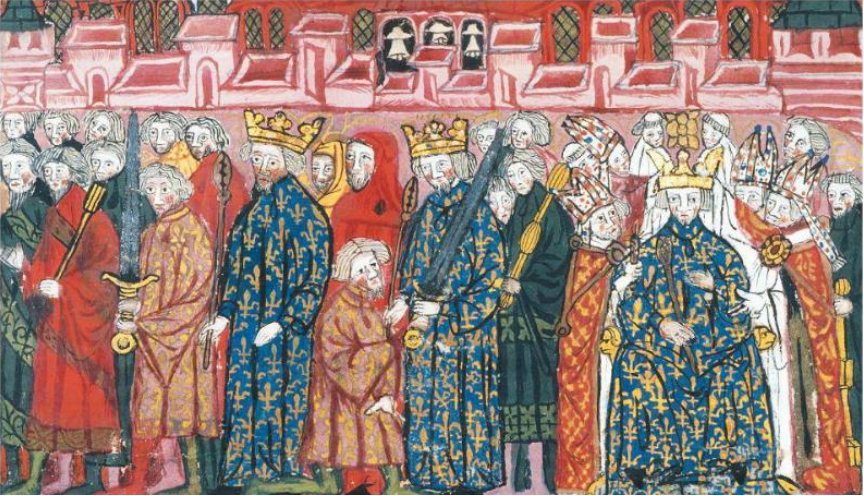

 La miniatura va letta da sinistra a destra e in successione cronologica: illustra l’incoronazione di Filippo II Augusto . Questi viene spogliato dei suoi abiti e vestito di una tunica da frate (terza figura da sinistra con la spada in mano). Il significato è chiaro: il futuro re deve liberarsi della sua natura e presentarsi penitente davanti a Dio. Vestiti gli abiti regali (il mantello blu con i gigli di Francia), riceve quindi il bastone (simbolo della giustizia) e la spada (simbolo della guerra), ponendo simbolicamente la propria autorità di giudice e di guerriero al servizio di Dio. A quel punto si passa al momento più solenne di tutta la cerimonia l’arcivescovo e i vescovi (le figure a destra con paramenti rossi) pongono la corona sul capo del re, che è assiso in trono. Nella miniatura (alteratasi nel corso dei secoli) non è possibile vedere la sacra ampolla che conteneva l’olio sacro dell’unzione.
L’immagine mostra il momento principale della consacrazione del sovrano (probabilmente Luigi IX). L’arcivescovo di Reims con un ago d’oro, precedentemente immerso nel santo crisma contenuto nell’ampolla sacra, che secondo la tradizione conservava lo stesso olio profumato con il quale era stato battezzato re Clodoveo, unge la fronte del re. Questi diventa così l’“unto del Signore”, il suo prescelto. Sull’altare si vedono la spada e la corona, simboli dell’autorità del re, posta ora al servizio della volontà divina. La spada, in particolare, costituisce l’arma con la quale il re investirà i suoi vassalli, difenderà il suo popolo e manterrà l’ordine.
La miniatura illustra le fasi del rito successivi all’unzione: la vestizione con la tunica e il mantello (in alto), e l’imposizione della corona sul capo del sovrano (in basso a sinistra). Nell’ultima scena (in basso a destra) è raffigurato il momento finale della Messa cui il re ha assistito dopo l’incoronazione. Consiste nel bacio che il sacerdote officiante dà al re in commemorazione del passo del Vangelo in cui Gesù diede il bacio della pace agli apostoli